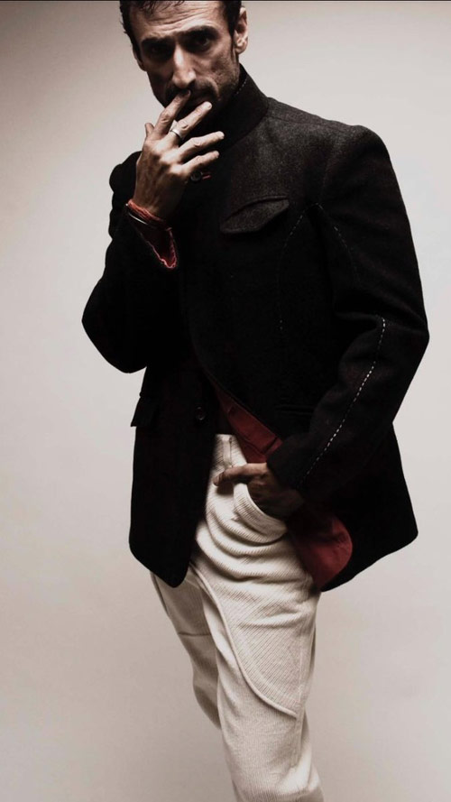

Rahul Dev Nailed Menswear and Proved He's One Of The Best
At 48, model-turned-actor, Rahul Dev can still give the younger crop of models a run for their money. Not only is his jawline (and those abs) chiselled AF, but his sense of style is unparalleled! Though he might not be a regular face on the big screen currently (he’s down regional movies, though), fashion runways have never ceased to love him. He belongs to the original clique of models who made the shift successfully to the silver screen, becoming known both for their acting talents as well as their personal style, both keeping onscreen and off.
Over the years, Rahul’s impeccable fashion sense has kept him on the ‘fave-models’ list of ace designers like Rajesh Pratap Singh. With a knack of carrying off anything with great flair, he’s pulled together some solid ensembles created by the most revered names in the Indian menswear scene, including a phenomenal ‘Great Gatsby’ look, via a white JJ Valaya overcoat at Amby Valley India Bridal Fashion Week 2012.
Let’s not forget his polished desi dude look in a jazzy white achkan by Arjun Khanna at Bangalore Fashion Week 2013 (white seems to be his favourite shade and nobody cuts a better frame than him in Indian silhouettes) or his easy breezy yet confident look in a blue velvet JJ Valaya jacket at the Festival of Hope runway show in June, 2015 (and you thought velvet was a tough fabric to carry). While the younger crop in showbiz is trying hard to make a fashion statement, there are a few who are natural. Rahul is one of them.